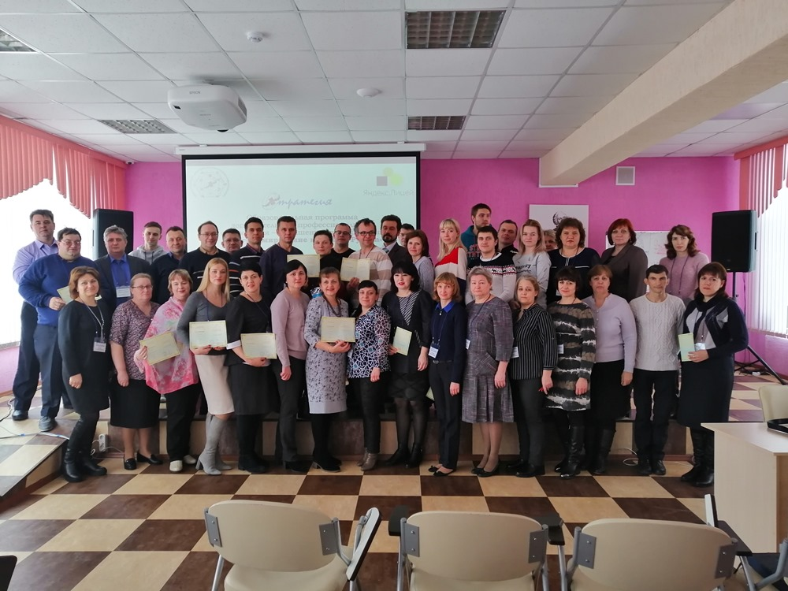

Кондрашин Юрий Алексеевич
к.т.н., доцент кафедры «Математика и информатика» Липецкого филиала Финансового университета при Правительстве Российской Федерации
Должность: Педагог дополнительного образования, преподаватель Яндекс Лицея
Образование: высшее (инженер-системотехник)
Стаж работы (на 01.07.2017): общий - 20 лет, педагогический - 20 лет
Курсы повышения квалификации
- 2016 г. - «Использование модуля аналитической отчетности КИС 1С:Предприятие для анализа деятельности предприятия» (ФГОБУ ВО «Финансовый университет при Правительстве Российской Федерации»)
- 2012 г. - Вопросы создания электронного правительства и перевода государственных услуг субъектов Российской Федерации в электронный вид (ФГБОУ ВПО «Российская академия народного хозяйства и государственной службы при Президенте Российской Федерации»)
- Завершил обучение педагогов по программе "Программирование на языке Python"
